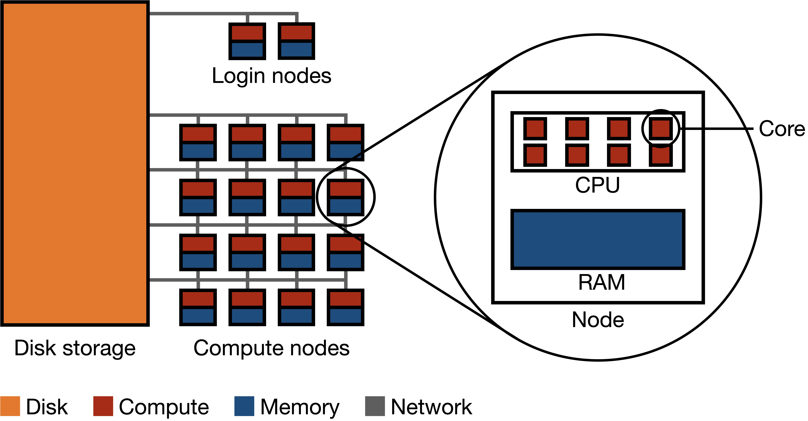
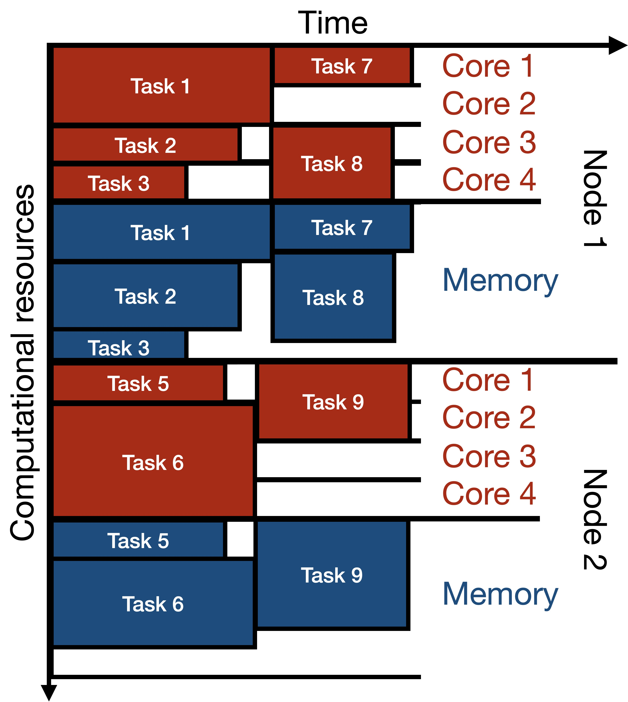

11 High-performance computing basics
11.1 The anatomy of an HPC cluster
Hardware
Overview
A high-performance computer cluster is a large collection of computers connected by a network to each other and to a common disk storage equipped with a parallel distributed file system (Figure 11.1). Each computer is called a node, and these nodes are divided into two groups: login nodes and compute nodes. Login nodes are like a lobby area for the HPC; they are where you end up when you first enter. There are usually just a few login nodes. The vast majority of the nodes in an HPC are compute nodes; they are the workhorses of the HPC. Each compute node has some number of cores (e.g. 16) as well as some amount of memory shared among those cores (e.g. 128 GB).

Components
Disk storage: Disk storage refers to devices that hold vast amounts of data persistently, even when power is switched off. Disk storage houses the file system of the HPC cluster.
Parallel distributed file system: A parallel distributed filesystem is designed to store and manage data across a multitude of machines concurrently, allowing multiple computers to read and write data in parallel.
Network: A network is a system of high-speed connections linking together computational nodes and storage systems.
Node: A node is a single computational unit within a cluster. Each node contains one or more CPUs and memory. An HPC cluster can consist of a few to thousands of nodes, working together to execute large-scale computational tasks.
CPU (Central Processing Unit): The CPU is the primary computational engine of an HPC node. It executes the instructions of a computer program and interacts with other system components. CPUs typically have multiple cores, allowing them to process several tasks simultaneously.
Core: A core is an individual processing unit within a CPU. Each core can independently execute instructions, so computational parallelization on HPC clusters typically occurs at the core level.
Memory/RAM (Random-Access Memory): RAM is the primary storage medium that the CPU uses to store and retrieve data during computations. It offers fast read and write access. Each node has its own RAM, which is shared among the cores on that node.
Software
Typically, HPC clusters come with several version of a number of standard softwares pre-installed for all users. Users can build up their computing environment by loading modules corresponding to specific versions of specific softwares (e.g. R/4.3.1). The command module avail lists all available modules that can be loaded by the user, while module load <module_name> loads the specified module. The module system provides a convenient way to dynamically modify a user’s environment to include the necessary executables, libraries, and other resources required by a software package. This approach allows multiple versions of software to coexist on the cluster and enables users to switch between them as needed, facilitating reproducibility and flexibility in using various software tools and libraries on HPC clusters.
11.2 Parallel computing paradigms
Parallel processing on HPC clusters allows multiple tasks to be carried out simultaneously. In this context, a “task” is a unit of computation. These tasks can be independent pieces of work, stages in a larger operation, or simultaneous computations on different data subsets. There are several parallel computing paradigms that differ based on how tasks communicate and share data. The main such paradigms are listed below, roughly in increasing order of complexity.
Embarrassingly parallel paradigm
This paradigm represents a collection of tasks where each task is entirely independent and does not need to communicate with other tasks. Because no inter-task communication or synchronization is required, the embarrassingly parallel paradigm is the simplest parallel computing paradigm. Common examples include parameter sweeps and Monte Carlo simulations.
Distributed memory parallelism
In this paradigm, tasks run on cores of separate nodes, each equipped with its own local memory. The primary mode of communication is passing messages across the network between nodes, often facilitated by protocols like the Message Passing Interface (MPI). Distributed memory parallelism requires careful management of data distribution and communication patterns to avoid bottlenecks and ensure efficient parallelization. Common applications of distributed memory parallelism involve big data processing and graph processing.
11.3 HPC resource requests and job scheduling
HPC resources are shared among many users, so each user must request the resources they need for their computations. HPC computations are structured into jobs, which are submitted to a software called a scheduler that manages the allocation of resources to each job.
Two kinds of jobs
There are two kinds of jobs on an HPC cluster: interactive jobs and batch jobs.
An interactive job entails directly entering a compute node and running computer programs from there. (It may be tempting to start computing directly in a login node, but this is strongly discouraged.) Interactive jobs are useful for initial exploration and debugging but not for more serious computations. Indeed, interactive jobs do not give you access to multiple compute nodes and whatever computations you start will be interrupted if you lose connection with the cluster.
A batch job is a computing job that you “send to the cluster” for completion. Instead of issuing commands manually as in an interactive job, a batch job entails a sequence of commands specified in a submission script. A batch job may involve one or more tasks. For example, an array job is a batch job that consists of multiple array tasks. Array jobs are a typical means to carry out embarrassingly parallel computations. Unlike interactive jobs, batch jobs like array jobs can take advantage of the cluster’s multiple compute nodes. Furthermore, once you submit a batch job, you need not be logged into the cluster for the job to finish running.
Resource requests
Whether you would like to run an interactive job or a batch job, you need to request resources from the scheduler. Below are the kinds of resources that are typically requested for interactive and batch jobs.
- Time (per job or per task): The amount of time you expect your job (or each constituent task) to run, specified in hours, minutes, and seconds.
- Memory (per job or per task): The amount of memory you expect your job (or each constituent task) to use, often specified in gigabytes (GB).
- Number of cores (per job or per task): Array jobs often will have multiple tasks, but with just one core per task. Other kinds of batch jobs may have multiple cores per task.
Each kind of resource typically has a default setting that is used if you do not specify a value. For example, typically one core will be requested per job or per task by default.
Importantly, jobs or tasks that exceed their requested time or memory limits will be terminated. Thus, it is important to request enough time and memory for your job to complete successfully. However, requesting too much time or memory can be problematic as well, as it may delay the start of your job. Thus, a good strategy is to run a small test job to get a sense of how much time and memory your computations require, add a little bit of wiggle room, and then request that amount of time and memory for your actual job. For example, if your test job takes 10 minutes and uses 1 GB of memory, you might request 15 minutes and 2 GB of memory for your actual job.
Job scheduling
The scheduler manages the allocation of resources to each job. It does so by maintaining a queue of jobs waiting to be executed. When a job is submitted, it is placed in the queue. The scheduler then allocates resources to each job in the queue based on their resource requests and the order in which they are submitted. Below is an example of how a scheduler may allocate compute and memory resources across time to several jobs.

The scheduler may also impose limits on the amount of resources that can be requested by a single user at a given time. For example, a scheduler may limit the number of cores that a user can request at a given time to 100. This limit is called a fair-share limit. Many HPC clusters have multiple queues for different kinds of jobs. For example, there may be separate queues for jobs with particularly short or long requested runtimes, or for jobs with particularly small or large requested memory allocations.
Scheduler commands
There are several different schedulers in use by HPC clusters, two of the most common being Sun Grid Engine (SGE) and Simple Linux Utility for Resource Management (SLURM). These different schedulers have different syntax for tasks like submitting jobs, viewing the job queue, etc.
| Task | SGE Command | SLURM Command |
|---|---|---|
| Submit interactive job | qrsh |
srun |
| Submit batch job | qsub <script> |
sbatch <script> |
| Resource request flags | -l h_rt=01:00:00 -l m_mem_free=1G |
--time=01:00:00 --mem=1G |
| Delete a job | qdel <job_id> |
scancel <job_id> |
| View job status | qstat |
squeue |
| Job accounting | qacct |
sacct |
Note that there is heterogeneity within the syntax used even within SGE or SLURM schedulers; please check your specific cluster’s documentation.
11.4 Interacting with HPC clusters
Typically, the HPC workflow involves the following steps:
- Develop and debug code locally (i.e., on your laptop or desktop computer).
- Move your code (and data, if applicable) onto the cluster.
- Test-run your code on the cluster via an interactive job.
- Submit a batch job to carry out your parallel computations.
- Combine the results from individual jobs into a single file.
- Move the results onto your local machine.
- Explore the results on your local machine.
The following sections detail some of the steps described above.
Logging onto the cluster
Logging onto a cluster can be done either via the Terminal or via a remote desktop. I will focus on the former approach. To log into a cluster via the Terminal, one typically uses ssh, e.g.
ssh ekatsevi@hpc3.wharton.upenn.eduUsually, you will be required to enter a password at this stage. However, I recommend setting up SSH keys in order to avoid entering your password each time you log onto the cluster. Upon gaining access, you will land in a login node.
Moving code and data between your computer and the cluster
Code
The best way to move code between your local computer and the cluster is via GitHub. For example, to get code from your local computer to the cluster, simply push your code from your local computer to GitHub, and then pull from GitHub to the cluster. This will make sure your code stays synchronized across these two computing environments.
Data
The easiest way to move data between your local computer and the cluster is also GitHub. However, this approach works only if the data files you are working with are under 100 MB, which is GitHub’s limit. Otherwise, the best approach is via rsync, a Linux utility for file synchronization.
Submitting batch jobs
To submit a batch job, you must first write a submission script. Here, I will illustrate how one would write a submission script for an array job. Suppose you would like to carry out a numerical simulation that compares 100 different parameter values (say 1, 2, …, 100). To do so, you would first create an R script called run_sim.R, which takes as a command-line argument the parameter value and writes the results of the corresponding simulation to file. Then, you would create a bash script called submit_jobs.sh, which specifies the resource requests as well as the code to run for each array task (the array task is specified by the environment variable SGE_TASK_ID).
submit_jobs.sh
#!/bin/bash
#$ -N my_simulation # Specify job name
#$ -j y # Merge standard output and standard error
#$ -l h_rt=01:00:00 # Request 1 hour of runtime
#$ -l m_mem_free=1G # Request 1 GB of virtual memory per slot
#$ -t 1-100 # Specify the task range for the array job
# load requisite modules
module load R/4.3.1
# Calculate parameter for this task via scheduler's $SGE_TASK_ID
parameter_value=$SGE_TASK_ID
# Run the simulation with the specific parameter value
Rscript run_sim.R $parameter_valueFinally, you would submit this array job to the scheduler via
qsub submit_jobs.shPlease see this GitHub repository for an example of using this paradigm to carry out a numerical simulation.
To submit a batch job, you must first write a submission script. Here, I will illustrate how one would write a submission script for an array job. Suppose you would like to carry out a numerical simulation that compares 100 different parameter values (say 1, 2, …, 100). To do so, you would first create an R script called run_sim.R, which takes as a command-line argument the parameter value and writes the results of the corresponding simulation to file. Then, you would create a bash script called submit_jobs.sh, which specifies the resource requests as well as the code to run for each array task (the array task is specified by the environment variable SLURM_ARRAY_TASK_ID.
submit_jobs.sh
#!/bin/bash
#SBATCH --job-name=my_simulation # Specify job name
#SBATCH --time=01:00:00 # Request 1 hour of runtime
#SBATCH --mem=1G # Request 1 GB of memory
#SBATCH --array=1-100 # Specify the task range for the array job
# load requisite modules
module load R/4.3.1
# Calculate parameter for this task via scheduler's $SLURM_ARRAY_TASK_ID
parameter_value=$SLURM_ARRAY_TASK_ID
# Run the simulation with the specific parameter value
Rscript run_sim.R $parameter_valueFinally, you would submit this array job to the scheduler via
sbatch submit_jobs.shMonitoring the progress of batch jobs
You can monitor the progress of your batch jobs (or tasks, for array jobs) by viewing the status of queued or running jobs (via qstat on SGE or squeue on SLURM). These commands will show you how many of these jobs are still waiting in the queue and how many are running. If you wish to monitor the progress of each job (or task) individually, you can use its output file. These output files will usually be named something like <job_name>.o<job_id>.<task_id>, and will appear by default in the same directory as your submission script. If your code (in this case, run_sim.R) prints statements about its progress, then these will show up in the output file corresponding to each job and task.
Debugging errors in batch jobs
Errors in your batch jobs will typically be due to one of two reasons: a bug in your code or an inadequate resource request. The former issue is always present, but the latter is HPC-specific.
Bug in your code
Usually, you would develop and debug your code locally prior to moving it to the cluster. This strategy should help reduce the number of bugs you encounter when running code on the cluster. If you do encounter a bug in your code on the cluster, then you can make note of the job and/or task id and try to reproduce and fix the bug in an interactive session on the cluster. Alternatively, you can go back to your local machine to fix the bug.
Inadequate resource request
Suppose you requested an hour for a given batch job (or task) and that job actually needed two hours. In this case, the scheduler unceremoniously kills that job after one hour and prints an error message in the corresponding log file. In addition to inspecting the log file, you can get a better sense for what happened with a killed job via the job accounting feature of the scheduler to get a wealth of information about the given job/task:
qacct -j <job_id> -t <task_id>sacct -j <job_id>_<task_id>To deal with insufficient memory or time requests, simply restart the job with an increased memory or time request. You may need to run some pilot jobs to get a better sense for how much memory or time your code will need.